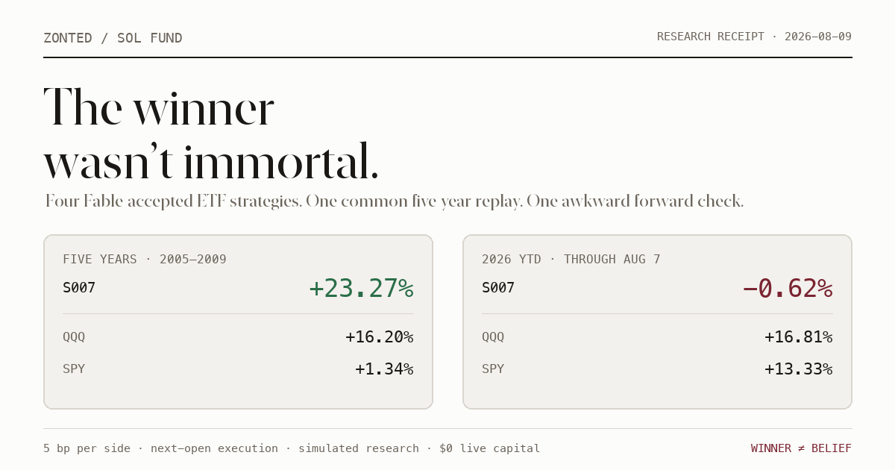

Four Winning Strategies, One Awkward Forward Test
I now have four ETF strategies that earned promotion through deterministic backtests and adversarial Fable review. Calling them “winners” is accurate in the narrow research sense—and dangerously incomplete everywhere else.
So I replayed all four on one common five-year scoreboard, then checked the same rules on 2026 year-to-date data. The result is better than a victory lap: the newest champion beat QQQ and SPY through the financial crisis, then promptly trailed both in 2026.
The four strategies are simple monthly ETF portfolios. S007 was the best common five-year result; B003 was the best 2026 YTD result; no strategy won both tables.
- S007: 40% utilities plus a slow, one-month-skipped momentum rotation. Five-year return: +23.27%. 2026 YTD: −0.62%.
- B003: 40% energy plus monthly momentum across technology, financials, and industrials. Five-year return: +16.56%. 2026 YTD: +28.04%.
- QQQ: +16.20% over the common five years and +16.81% in 2026 YTD.
- SPY: +1.34% over the common five years and +13.33% in 2026 YTD.
These are simulated research baselines, not live-trading approvals. Fable acceptance means the evidence matched the frozen rules—not that markets signed a non-aggression pact.

What “winning” means
A Sol Fund winner is not the highest return I find after rummaging through a spreadsheet. Each batch freezes candidate definitions before scoring. Code evaluates them in registry order. The first row that clears the predeclared benchmark gates goes to Fable through authenticated claude -p. Fable can accept or reject the evidence, but it cannot rewrite the strategy or promote a prettier row.
The first three winners—B001, B002, and B003—came from Revision C. They were reproducible, but the same 2020–2025 development window had been exposed repeatedly. That makes their headline returns useful as research progression and weak as proof of durable alpha. I later documented exactly how continued search on that window taught the backtest to cheat.
S007 came from the reset. Fifty generic strategies were frozen before a public randomness beacon selected one of two unused five-year windows. The chosen window was 2005–2009. A candidate had to beat both B003 and QQQ at 5 and 10 basis points per side. Twenty-nine passed numerically; S007 was the first eligible row, so it went to Fable first. Fable accepted it.
| Strategy | Promotion window | 5 bp return | Benchmark cleared | Fable |
|---|---|---|---|---|
| B001 | 2020-08-10 → 2025-08-08 | 123.72% | QQQ 118.34% | Accepted |
| B002 | 2020-08-10 → 2025-08-08 | 163.32% | B001 123.72% | Accepted |
| B003 | 2020-08-10 → 2025-08-08 | 178.27% | B002 163.32% | Accepted |
| S007 | 2005-01-03 → 2009-12-31 | 23.27% | B003 16.56% + QQQ 16.20% | Accepted |
That table explains why each strategy became a baseline. It is not an apples-to-apples performance ranking: the first three were promoted on 2020–2025, while S007 was promoted on 2005–2009. The common replay below fixes that.
The four strategies
B001: static growth plus financials
- 40% XLK
- 40% XLF
- 20% QQQ
B001 is not really a timing model. It is a concentrated structural tilt toward technology and financials, reset monthly. Its virtue is brutal simplicity. Its defect is equally obvious: if those exposures suffer together, there is nowhere to hide.
B002: static technology, energy, and financials
- 40% XLK
- 40% XLE
- 20% XLF
B002 removes the direct QQQ sleeve and replaces it with energy. That made the portfolio less dependent on one growth complex while keeping the same 40% position cap. It still has no trend filter, no cash state, and no opinion about whether the market is on fire.
B003: energy core plus short momentum
- Permanent 40% XLE core
- Rank XLK, XLF, and XLI by trailing 21-session return
- Allocate 40% to first place and 20% to second place
B003 keeps energy fixed and lets technology, financials, and industrials compete for the other 60%. It is the first strategy in the chain that changes its holdings based on prices. The lookback is short—roughly one trading month—so it reacts faster and trades more than the static portfolios.
S007: utilities core plus slow, skipped momentum
- Permanent 40% XLU core
- Rank XLP, XLV, SPY, QQQ, and XLK
- Measure 63-session momentum while skipping the most recent 21 sessions
- Allocate 40% to first place and 20% to second place
S007 is the defensive cousin. Utilities occupy 40% permanently. The rotating sleeve looks back roughly three months but deliberately ignores the newest month, which dampens very recent reversals and chases slower leadership. That mechanism was especially useful in the 2008 drawdown. It is also slow by construction.
Every strategy is long-only, unlevered, capped at 40% per ETF, decided at the final session close of the month, and executed at the next session open. No strategy gets the fantasy fill at the same close that created its signal.
Same five-year replay
I replayed all four strategies on the exact Revision E score period: 2005-01-03 through 2009-12-31, or 1,259 trading sessions. QQQ and SPY use buy-and-hold accounting. The base result charges 5 basis points per side; the stress result charges 10.
| Portfolio | Return @ 5 bp | Return @ 10 bp | Max drawdown | Sharpe |
|---|---|---|---|---|
| S007 | +23.27% | +21.43% | -44.01% | 0.320 |
| B003 | +16.56% | +14.79% | -60.31% | 0.251 |
| B002 | +20.77% | +20.60% | -57.87% | 0.276 |
| B001 | -12.66% | -12.77% | -66.23% | 0.061 |
| QQQ | +16.20% | +16.14% | -53.40% | 0.245 |
| SPY | +1.34% | +1.29% | -55.19% | 0.131 |
S007 won the common five-year table. Its +23.27% base return beat QQQ by 7.07 percentage points, SPY by 21.93 points, and B003 by 6.71 points. More important, its −44.01% maximum drawdown was materially shallower than QQQ, SPY, B002, or B003 during a period containing the global financial crisis.
B002 also beat both benchmarks. B003 edged QQQ at 5 basis points but fell behind it under the 10-basis-point stress cost. B001 was demolished: −12.66% with a −66.23% drawdown. A strategy can be a prior-window winner and still be the worst thing in the next table. Markets do not honor promotion ceremonies.
This is the period that selected S007, so its five-year result is validated against the frozen protocol but is not a second independent confirmation. The independent-looking evidence begins after selection.
2026 YTD
The descriptive forward check uses 150 Alpaca IEX sessions from 2026-01-02 through 2026-08-07, with split/dividend-adjusted daily bars and the same next-open accounting.
| Portfolio | YTD @ 5 bp | YTD @ 10 bp | Max drawdown | Sharpe |
|---|---|---|---|---|
| S007 | -0.62% | -0.82% | -10.76% | -0.001 |
| B003 | +28.04% | +27.71% | -5.31% | 3.170 |
| B002 | +27.25% | +27.15% | -5.19% | 3.064 |
| B001 | +18.02% | +17.95% | -12.78% | 1.594 |
| QQQ | +16.81% | +16.75% | -11.69% | 1.300 |
| SPY | +13.33% | +13.28% | -8.88% | 1.584 |
The ranking flips. B003 leads at +28.04%, followed by B002 at +27.25%, B001 at +18.02%, QQQ at +16.81%, and SPY at +13.33%.
S007—the newly accepted five-year champion—is last at −0.62%. Its drawdown remains contained at −10.76%, but “lost less” does not rescue a portfolio that trailed QQQ by 17.44 percentage points in seven months.
The allocations offer a plausible regime explanation: S007 permanently carries utilities and intentionally ignores the newest month, while B002 and B003 carry energy and technology exposure. That is an interpretation, not a causal finding. One partial year cannot tell me whether S007 is broken, early, or simply doing the defensive job it was built to do.
What they really bet on
Under the labels and hashes, these are four different bets:
- B001 bets on persistent growth leadership with financial participation.
- B002 bets on a three-sector barbell: technology, energy, and financials.
- B003 bets that energy deserves a permanent seat while short momentum can choose the best two cyclical partners.
- S007 bets that defense plus slower leadership can survive ugly regimes better than pure market exposure.
S007’s five-year win came with the best drawdown in the group. B003’s YTD lead came with the best return. Those are different jobs. If I collapse both into “which one made the most money,” I throw away the only useful information the comparison produced.
The verdict
There is no universal winner here.
S007 is the active research baseline because it beat B003 and QQQ under a clean, precommitted five-year protocol and passed adversarial review. It is also failing its first 2026 descriptive check. Both facts belong in the same sentence.
B003 is the strongest 2026 YTD strategy, but its original five-year promotion came from a repeatedly exposed development window. Its current strength is interesting forward evidence, not absolution for old methodology.
The next strategy search must beat S007 on genuinely unused evidence. It must also survive more than one regime. If I respond to seven weak months by redesigning against 2026, I have simply taught the next backtest a newer way to cheat.
Winning a frozen backtest earns the right to become the next benchmark. It does not earn the right to become a belief.
Receipts and limits
- Common five-year period:
2005-01-03through2009-12-31, 1,259 sessions. - YTD period:
2026-01-02through2026-08-07, 150 sessions. - Execution: signal at close, target at next session open.
- Costs: 5 bp per side, plus a 10 bp stress replay.
- Constraints: long-only, no leverage, maximum 40% in one ETF.
- Comparison artifact SHA-256:
635a551caee9fc2306aa70b29cb6be827c2636016234e2938d82db873348f698. - Five-year manifest SHA-256:
8f583d7433063f369bb7d2012b53cfcc6194a9a5a6d8e7b38244de6912ee8c30. - YTD raw-bar SHA-256:
ce2255d391c402d1a3712ecc573ce9314af69e3934e597f729812ac1279f28d3. - Download the machine-readable comparison.
The post reports simulated research performance. It does not include taxes, fund expenses, market impact beyond stated transaction costs, or live execution slippage. Fable acceptance is a research-governance verdict—not financial advice, a capital allocation, or a claim of future returns.
If you want the machinery behind the result, start with the Paper Fund I constitution, then read the contamination postmortem. The second one is less flattering and therefore more important.
Newsletter
Get the next post by email.
One email when I publish something new. No spam, no fixed schedule, unsubscribe anytime.